Soit
Ma =  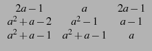
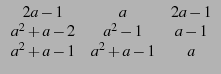![$ \left.\vphantom{
\begin{array}{ccc}
2a-1 & a & 2a-1\\
a^2+a-2 & a^2-1 & a-1\\
a^2+a-1 & a^2+a-1 & a
\end{array}}\right]$](img40.png)
a) Pour quelles valeurs de a, Ma est-elle inversible ?
Préciser son rang lorsqu'elle n'est pas inversible.
b) Calculer l'inverse de M2
Réponse :
On tape :
M:=[[2a-1,a,2a-1],[a^2+a-2,a^2-1,a-1],[a^2+a-1,a^2+a-1,a]]
On calcule le déterminant de M, on tape :
det(M)
On obtient :
2*a^4+-2*a^3+-2*a^2+2*a
Pour avoir l'inverse de M on tape :
inv(M)
On obtient :
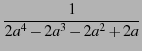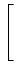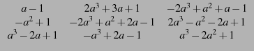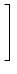
On tape :
solve(2a^4-2*a^3-2*a^2+2*a,a)
On obtient :
[-1,0,1]
Donc la matrice est inversible si
a [- 1, 0, 1]
Ou on tape :
factor(2a^4-2*a^3-2*a^2+2*a)
On obtient :
2*(a+1)*a*(a-1)^2
On tape :
rank(subst(M,a,-1))
On obtient :
2
On tape :
rank(subst(M,a,0))
On obtient :
2
On tape :
rank(subst(M,a,1))
On obtient :
1
On tape :
inv(subst(M,a,2))
On obtient :
A = 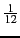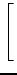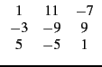
Remarque : pour éviter de faire des substitutions on peut définir la matrice M comme une fonction de a, il faut alors écrire :
M(a):={[[2a-1,a,2a-1],[a^2+a-2,a^2-1,a-1],[a^2+a-1,a^2+a-1,a]]}
surtout ne pas oublier { et }.
On peut alors taper : inv(M(2)).
Soit
A =  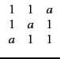
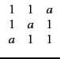![$ \left.\vphantom{
\begin{array}{ccc}
1 & 1 & a\\
1 & a & 1\\
a & 1 & 1
\end{array}}\right]$](img52.png)
Pour quelles valeurs de a, A est-elle diagonalisable ?
Réponse :
On tape :
A:=[[1,1,a],[1,a,1],[a,1,1]]
Pour avoir les valeurs propres de A on tape :
egvl(A)
On obtient :
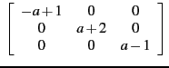
ce qui s'écrit :
[[-a+1,0,0],[0,a+2,0],[0,0,a-1]]
Si a  1 il y a 3 valeurs propres distinctes
- a + 1, a + 2, a - 1 et
1 il y a 3 valeurs propres distinctes
- a + 1, a + 2, a - 1 et
si a = 1 il y a une valeur propre double ( = 0) et une valeur propre
simple ( = 3).
Puis on cherche la matrice de passage, on tape :
egv(A)
On obtient :
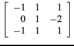
ce qui s'écrit :
[[1,1,1],[0,1,-2],[-1,1,1]]
les vecteurs propres sont les colonnes de cette matrice.
Ou on tape pour avoir directement les deux informations, matrice de passage et réduite de Jordan :
jordan(A)
On obtient une liste de deux matrices [P, B] (P est la matrice de passage et
B = P-1AP) :
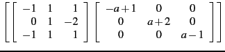
ce qui s'écrit :
[[[1,1,1],[0,1,-2],[-1,1,1]],[[-a+1,0,0],[0,a+2,0],[0,0,a-1]]]
On remarque qu'en faisant : a:=1 puis jordan(A)
les valeurs propres doubles sont regroupées et on obtient :
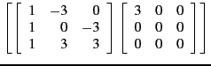
ce qui s'écrit :
[[[1,-3,0],[1,0,-3],[1,3,3]],[[3,0,0],[0,0,0],[0,0,0]]]
A est donc diagonalisable quelque soit a et
B = P-1AP.